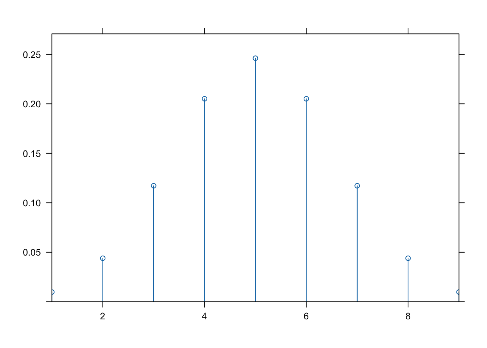

dbinom(x = 2, size = 10, prob = 0.5)[1] 0.04394531Recall that each distribution implemented in R has four functions associated with it. These are:
d - PMF or PDF
p - cumulative distribution function (CDF)
q - quantile function, inverse of CDF
r - random number generation
In this notebook, we will examine these functions and some of their applications in R for the binomial and normal families of distributions. We will also look at some of the plotting functions that are available for the various distributions.
For the binomial family of distributions1, the four functions are:
dbinom - PMF
pbinom - cumulative distribution function (CDF)
qbinom - quantile function, inverse of CDF
rbinom - random number generation
For a binomial distribution, we need to specify two parameters:
size - the number of trials
prob - the probability of success on each trial
For example, suppose we want to find the probability of getting exactly 2 heads out of 10 tosses of a fair coin. We can use the dbinom function to do this. The first argument is the number of heads, the second is the number of trials, and the third is the probability of success on each trial.
dbinom(x = 2, size = 10, prob = 0.5)[1] 0.04394531We can also use the pbinom function to find the probability of getting 2 or fewer heads out of 10 tosses of a fair coin. The first argument is the number of heads, the second is the number of trials, and the third is the probability of success on each trial.
pbinom(q = 2, size = 10, prob = 0.5)[1] 0.0546875We can also use the qbinom function to find the number of heads we need to get in order to have a probability of 0.05 or less of getting that many heads out of 10 tosses of a fair coin. The first argument is the probability, the second is the number of trials, and the third is the probability of success on each trial.
qbinom(p = 0.05, size = 10, prob = 0.5)[1] 2Finally, we can use the rbinom function to simulate 10 tosses of a fair coin. The first argument is the number of trials, the second is the probability of success on each trial, and the third is the number of simulations.
rbinom(n = 10, size = 10, prob = 0.5) [1] 4 3 7 4 7 3 5 8 7 5Exercise: Find the probability of getting exactly 3 heads out of 10 tosses of a coin where the probability of landing heads is 0.4. Find the probability of getting 3 or fewer heads out of 10 tosses of a coin where the probability of landing heads is 0.4. Find the number of heads you need to get in order to have a probability of 0.05 or less of getting that many heads out of 10 tosses of a coin where the probability of landing heads is 0.4. Simulate 10 tosses of a coin where the probability of landing heads is 0.4.
The plotDist function from the mosaic package can be used to plot the PMF and CDF of a binomial distribution. The first argument is the name of the distribution, the second is a list of parameters, and the third is the kind of plot to produce. The default is a PMF plot.
plotDist("binom",params = list(size = 10, prob = 0.5), kind = "density")
Or, as a histogram:
plotDist("binom",params = list(size = 10, prob = 0.5), kind = "h")Here is the corresponding CDF:
plotDist("binom",params = list(size = 10, prob = 0.5), kind = "cdf")We can also use the ggplot function to plot the PMF of a binomial distribution. The first argument is the data frame, the second is the mapping, and the third is the type of plot. The geom_col function is used to create a bar plot. The geom_text function is used to add the probabilities to the plot. The position_dodge function is used to move the text to the center of the bars. The scale_fill_colorblind function is used to change the colors of the bars. The labs function is used to add a title, subtitle, and axis labels.
data.frame(heads = 0:10, prob = dbinom(x = 0:10, size = 10, prob = 0.5)) %>%
mutate(Heads = ifelse(heads == 2, "2", "other")) %>%
ggplot(aes(x = factor(heads), y = prob, fill = Heads)) +
geom_col() +
geom_text(
aes(label = round(prob,2), y = prob + 0.01),
position = position_dodge(0.9),
size = 3,
vjust = 0
) +
scale_fill_colorblind() +
labs(title = "Probability of X = 2 heads out of ten.",
subtitle = "b(10, .5)",
x = "Numer of heads out of ten tosses (x)",
y = "probability") Exercise: Plot the PMF and CDF of a binomial distribution with 10 trials and a probability of success of 0.4.
For the normal family of distributions2, the four functions are:
dnorm - density
pnorm - cumulative distribution function
qnorm - quantile function, inverse of CDF
rnorm - random number generation
For a normal distribution, we need to specify two parameters:
mean - the mean of the distribution
sd - the standard deviation of the distribution
For example, suppose we want to find the probability of getting a value less or equal to 1 from a normal distribution with mean 0 and standard deviation 1. We can use the pnorm function to do this. The first argument is the upper bound, the second is the mean, and the third is the standard deviation.
pnorm(q = 1, mean = 0, sd = 1)[1] 0.8413447We can also use the qnorm function to find the value we need to get in order to have a probability of 0.05 or less of getting that value from a normal distribution with mean 0 and standard deviation 1. The first argument is the probability, the second is the mean, and the third is the standard deviation.
qnorm(p = 0.05, mean = 0, sd = 1)[1] -1.644854Finally, we can use the rnorm function to simulate 10 values from a normal distribution with mean 0 and standard deviation 1. The first argument is the number of simulations, the second is the mean, and the third is the standard deviation.
rnorm(n = 10, mean = 0, sd = 1) [1] 0.52722116 -0.19745195 0.64838942 -0.08762798 0.07456747 -1.43227909
[7] -0.62792700 0.97375016 -0.62552475 -0.83377840Note that for continuous distributions like normal distributions, it doesn’t make sense to compute probabilities of the form \(P(X = x)\). Instead, we compute probabilities of the form \(P(X \leq x)\), \(P(X \geq x)\), or even \(P(a \leq X \leq b)\). Thus, the dnorm function is not used as often as the pnorm function when working with normal distributions.
Exercise: Find the probability of getting a value between 0 and 1 from a normal distribution with mean 0 and standard deviation 1. Find the value you need to get in order to have a probability of 0.05 or less of getting that value from a normal distribution with mean 2 and standard deviation 0.5. Simulate 10 values from a normal distribution with mean -3 and standard deviation 1.7.
For plotting continuous distributions like normal distribution, the ggdistribution from the ggfortify package works well.
For example, here is the PDF of a normal distribution with mean 0 and standard deviation 1:
ggdistribution(dnorm, seq(-3, 3, 0.1), mean = 0, sd = 1)Here is the CDF of a normal distribution with mean 0 and standard deviation 1:
ggdistribution(pnorm, seq(-3, 3, 0.1), mean = 0, sd = 1)The ggdistribution function can also be used to plot multiple distributions on the same plot. The p argument is used to add distributions to an existing plot. The colour argument is used to change the color of the distribution. The geom_line function is used to add a line to the plot. The geom_ribbon function is used to add a shaded region to the plot. The alpha argument is used to change the transparency of the shaded region. The fill argument is used to change the color of the shaded region.
p <- ggdistribution(dnorm, seq(-5, 7, 0.1), mean = 2.5, sd = 0.5, colour = '#E69F00')
p <- ggdistribution(dnorm, seq(-5, 7, 0.1), mean = 2.5, sd = 3.0, colour = '#009E73', p = p)
ggdistribution(dnorm, seq(-5, 7, 0.1), mean = 0.0, sd = 1, colour = '#CC79A7', p = p)Here is a comparison of the corresponding CDFs:
p <- ggdistribution(pnorm, seq(-5, 7, 0.1), mean = 2.5, sd = 0.5, colour = '#E69F00')
p <- ggdistribution(pnorm, seq(-5, 7, 0.1), mean = 2.5, sd = 3.0, colour = '#009E73', p = p)
ggdistribution(pnorm, seq(-5, 7, 0.1), mean = 0.0, sd = 1, colour = '#CC79A7', p = p)Finally, we can use ggplot2 to plot the area under the PDF for normal distributions:
dnorm_limit_mid <- function(x) {
y <- dnorm(x)
y[x <= -0.5 | x >= 1.2] <- NA
return(y)
}
ggplot(data.frame(x = c(-3, 3)), aes(x = x)) +
stat_function(fun = dnorm_limit_mid, geom = "area", fill = "blue", alpha = 0.2) +
stat_function(fun = dnorm) + geom_vline(xintercept = -0.5,linetype="dashed",linewidth=1) + geom_vline(xintercept = 1.2,linetype="dashed",linewidth=1) + annotate(geom="text",x=-0.8,y=0.0,label="z=-0.5",size=6) +
annotate(geom="text",x=1.5,y=0.0,label="z=1.2",size=6) +
annotate(geom="text",x=0.3,y=0.15,label="area=?",size=6) + theme_minimal(base_size = 22) 
Exercise: Plot the PDF and CDF for a normal random variable with mean 6 and standard deviation 2.